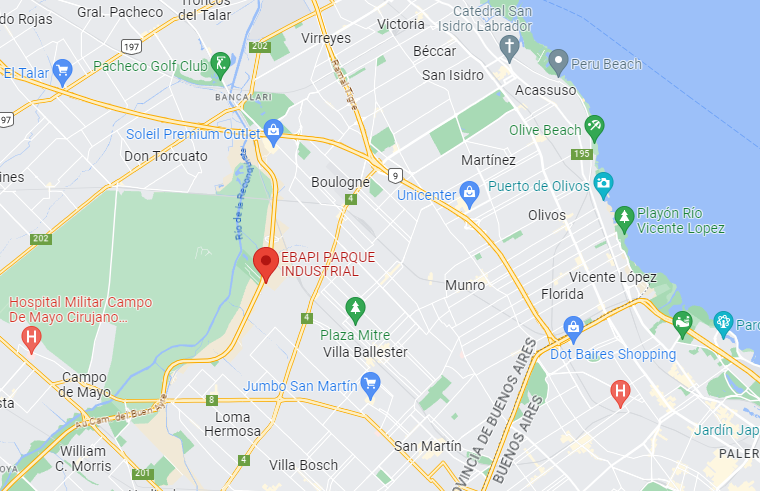

Ubicación
Nos encontramos localizados en el Parque Industrial Emprendedores del Buen Ayre (EBAPI), ubicado en la
localidad de José León Suárez, Partido de General San Martín, Provincia de Buenos Aires, Argentina.
Nuestras instalaciones cuentan con acceso exclusivo sobre la autopista Camino del Buen Ayre, ubicándose a cinco minutos de Panamericana y diez minutos de Acceso Oeste.
Además, dispone todos los servicios generales e indispensables para el funcionamiento de la planta, tales como, energía eléctrica, desagües, gas industrial, entre otros.

Nuestras instalaciones cuentan con acceso exclusivo sobre la autopista Camino del Buen Ayre, ubicándose a cinco minutos de Panamericana y diez minutos de Acceso Oeste.
Además, dispone todos los servicios generales e indispensables para el funcionamiento de la planta, tales como, energía eléctrica, desagües, gas industrial, entre otros.